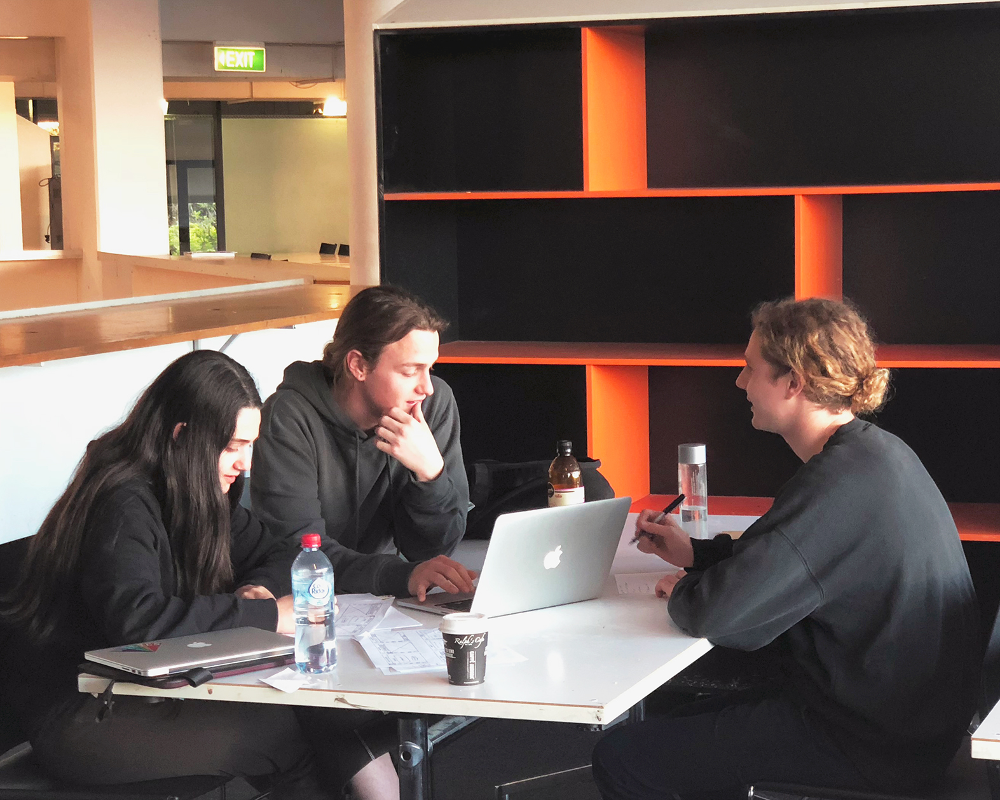

Design Process
I began this semester with wide eyes and high hopes, ready to take on the world and sharpen my design skills. I knew that the DECO2200 Interaction Design Studio would consist of a group project and after experiencing the painstaking
repercussions of working in a lacklustre group in university projects before, I knew that re-uniting with Beth and Benjie was the only option if we were to have any chance of producing work that we could be proud of. Working with
each other before, we knew the teams strengths and weaknesses and most importantly we got along as friends really well. Always pushing each other to achieve and not holding back when it comes to criticism (always constructive though)
which we all know helps to make us better designers.

With our team ready we began the semester by defining what interaction design is and how it relates to User-Centred Design.
Hamish began outlining the core concept of interactions, using your senses; olfactory, auditory, tactile,
sight, gustatory to interact with a device or system that provides some form of feedback. These concepts needed to be constructively manipulated to design a product/system with great usability, a combination of usefulness and utility.
Oliver
Weidich then spoke to us about User Centred Design and the importance of research and understanding who you are designing for and what they really want. In the tutorial Oliver asked the class to begin doing some quick sketches
of a variety of doors and buttons that he had described to us. This exercise highlighted that one design cannot solve all problems, but some designs can be used to solve a variety if done properly and with the correct amount of
iteration.
Design Brief
“Your task as interaction designers is to map out the interactions that will be required to assist people in interacting with autonomous vehicles in future cities.”
We began our research of potential use cases for this brief by attempting to map out as many possible contexts that autonomous vehicles could be used. This brain-dump of ideas into a mind-map allowed our group to really get creative
with what the definition of a vehicle actually is and how this technology could be utilised. We narrowed in on three potential concept areas that intrigued us:
Transport
An autonomous interstate high-speed autobahn, replacing the need for domestic flights. Either a “bus-stop” like service with public vehicles rented for the journey or private vehicles that are a ADAS (Advanced Driver Assistance System)
that are autonomous in cities and on the autobahns but just regular cars in unauthorised zones.
Delivery
An automated ‘Big Chain’ fast-food delivery service with modular vehicles that can be loaded at the nearest store of choice and delivers your order to your address (not door).
Safety
Public transport with multiple options for pick-up/drop-off. You have the choice of getting on a transport in 1min and being dropped 5min walk from destination or wait 8min and being dropped at the doorstep. Would require a lot of
these vehicles in one area and could only be for urban hubs (cities). the program would select from a variety of passenger trips and destinations, while talking to other vehicles to determine the most efficient solutions (i.e.
drop-off locations)
From these ideas we decided to focused in on transportation and were really excited to see where this would take us. The next step was to map the stakeholders, trying to map all the people that would be involved and effected by our
idea was a lot tougher than expected, but it allowed us to really get a sense of who we would be designing for.
Back to the drawing-board we went. The team realised we had decided upon a solution to something we had decided was a problem, with little knowledge or understanding of what anyone actually involved wanted. So we went back to mapping
out some new ideas, this time we generated 3 broad areas of interest; Environment, Socio-Economic Inequality and Urbanisation and researched current political policies trying to distil what are the real problems that Sydney-siders
are faced with in this current climate.
The group kept coming back to two main concept areas; Waste Management and Domestic Violence (DV) to continue our project with. While waste management seemed to offer more potential
solutions initially, we decided to embrace the potential difficulties of the unknown and moved forward with the pressing issue of Domestic Violence in Sydney.
After defining our new problem space, we decided to create another stakeholder map so that we could understand what people and services are involved in this area. The results were extremely insightful and after hearing from Hendrik
Mueller about research techniques and tools we started to develop a research plan that allowed for a triangulated approach to our primary research. We had decided to all conduct a variation of semi-structured and open-ended interviews,
coupled with contextual observations and analysis of secondary articles. This would enable us to gain as much qualitative data as possible which we could back up with quantitative secondary research.
I was to focus on the
police force and there role in responding and preventing DV incidents around Sydney.
Benjie focused on social workers and their involvement with crisis support services.
Beth attempted to understand victims better by looking
into the housing support workers and facilities.
I then generated a research plan for my area of focus in this initial stage so that I was clear about what i had to do next. I defined my research objective, method, participant selection, environment and data analysis techniques so
that I had a clear and succinct road-map for the next steps I would be conducting alone.
Next I developed a number of questions for my interview that would allow me to gain a deeper understanding of what police actually do in this space and would allow for probing and tangental questioning, depending on the responses that
were given.
I managed to get in contact with Sergeant Gill, the head of the domestic Violence unit for the northern Beaches and interviewed her at the Dee-Why police station. I was very lucky to be able to talk to a person so closely involved
in the area and she was accompanied by a fellow officer Sutcliffe. Both participants gave great insights into the procedures, tools, techniques and emotive states of many people involved with DV. Conducting the interviews in their
office also helped me to understand the technologies that were available and the intricate inner workings of their day-to-day lives at work.
I then spoke to Detective Henessey, who has been part of the force for over 25
years and had seen many cases of DV in her time. She had dealt with both the victims and perpetrators, both in first response situations and follow up proceedings.
Next I created a persona to represent the police officers I had spoken to and also a proto-persona, a realisation of a victim generated form the information I gathered from secondary research. Then I combined these to make a story
board to visuals the processes and technologies involved in the process of police involvement with DV victims. Finally a user journey map based on this starboard allowed me to map the pain points involved in the process so that
I could tailor future research to these areas. I then generated core insights from my interviews by generating an affinity diagram from the transcripts.
Civilians are often distrusting of police and soothes lie or skew the truth to protect themselves or partners.
DV is seasonally affected, with rates rising to almost double in warmer months and around big sporting events.
The police’s ability to share information quickly and efficiently is severely constrained due to poor communication between DV services.
After presenting our research and generating a few initial concepts for potential future development the team stay down and tried to unpack what we had learned from our different areas. We then tried to identify areas of overlap and
connect the dots between all the areas. We found that there was a myriad of complex issues that would take a great deal of consideration and predominantly policy change to solve which has nothing to do with autonomous vehicles.
We were stuck and struggling to move forward with the project. Sophie then suggested that we come up with a bunch of ideas and see if that sparked any useful ideas. We turned to “Design. Think. Break. Make. Repeat” (Tomitsch et
al 2017) to help with this stagnant situation. We began the process by developing a list of key stakeholders and 20 vehicles that could potentially solve some of the issues. Through the process of forced association the team generated
over 60 ideas and and implemented the into XYZ statements to further elaborate on the ideas.
We came together again and started to look at what we had come up with and which ideas were most predominant and overlapping. We discussed the concepts (amazing and crazy ones) and through a process of elimination, related back to
our research, we ended up with three concepts that we would take into the first round of development. We noticed though that our definitions of each concept still were not fully aligned so we decided to again refer to Martin Tomitsch’s
design book and utilised the method of Brain Writing 6-3-5 to help define the salient aspects of each concept and build upon each others ideas for the designs. We ended up with 3 different versions of the same ideas and amalgamated
the best parts of each to define our 3 concepts for future testing.
Social Worker Assistant
A mobile IoT printer/scanner unit that would allow social workers to continue to work with tangible mediums as they so comfortably do now, but also provide them with an easy solution to digitise and share all the information they have
gathered. The assistant would allow the social services to be linked more effectively and reduce the amount of time wasted searching for documents and in their own office and from other government departments.
Educational Utility Bot
This concept was aimed at women living in housing facilities and was developed as a system to work in parallel with TAFE courses, providing education and resources for people with lack of access. Our research found that the majority
of victims are under educated and have minimal experience in the workforce, we wanted to create an easy alternative to standard university and TAFE courses that could be done at the individuals own pace and was flexible with their
work schedule. the bot could meet the participants at their home anytime would hopefully enable them to earn a certificate so that they could begin a more rewarding career and move out of the supplied housings some people remain
there for up to 15 years.
Autonomous Secure Housing
An alternative to police as the first response to DV incidents, A.S.H is a motorhome style bus that can be utilised by anyone who feels they are in a dangerous situation to leave and have access to a variety of resources. The bus could
pick users up from a set location and allow them to live in the bus for up to 72hrs, with a confidential route planned to keep them safe. the person would be taken to a councillor to discuss future plans and offered access to any
other services they may need. Finally they could decide to return home if they felt safe enough or take further steps to remove themselves from the situation. Most importantly the police would not be involved in the event unless
the person explicitly asked, to keep their anonymity and reduce the fear of criminalisation of themselves or their partner.
Once had our 3 design concepts we created a storyboards using the personas we had created in our initial rounds of research to solidify and visualise the ideas generated by the brain writing exercise. We then spoke to our fellow students
and tutors to again gage their reactions to the concepts and gain an outside perspective on our concepts. Happy with the feedback we began focusing on the interfaces that we needed to create to realise the brief.
First step
was to map out the key features that would be needed and how they would all inter-relate. The team decided to cover 2 ideas each to ensure we fully realised potential of each idea. Once the core features were mapped each person
selected a concept and created the first round of paper prototypes. Simple sketches in frames of phones or iPads that we would use to test on participants that fit the archetypal personas we had created for each idea.
I created the wireframes for the Utility Bot and tested them with three women in there 20’s. I chose these participants because we found in our research that whilst domestic violence effects every type of person in society, young women
were most at risk. The participants were a mix of women in long and short term relationships as this would give the best coverage of different perspectives. I created both a mobile application used to book the service and a screen
that would be apart of the Bot that would display the lessons. Next I developed a short contextualisation that would set the scene for the testing and also some abstract goals that the persona would want to complete. The were then
broken down into shorter, more concrete tasks that I could use in my Think-Aloud testing to confirm whether or not the interface was usable.
The Think-Aloud testing was filmed so that i could reflect on what the participants
had said and pull out any insights I missed during the testing. this also allowed me to view where exactly on the screens there users were touching and what was easy and what was not communicated well. After the tasks were competed
I also engaged the participants in a short open-ended interview about the idea to see if they actually thought it was a viable solution and if they could suggest any variations or improvements. The testing did not go all together
smoothly, some of the participants were confused as to why the screens were just paper drawings and kept suggesting that I add colour to make things clearer. The participants also struggled with the continual feedback they were
asked to provide during the Think-Aloud’s and so I had to keep prompting them to rely everything they were thinking about the system. Also I had the sense that they did not want to be ‘mean’ or too critical and so some of the feedback
was quite ‘fluffy and polite’ however I did mange to gain some useful insights into the information architecture and the content that was to be displayed.
The team then came back together to collate our findings and from the competency tables we created, we found that A.S.H was the design with the least resistance and issues. We decided hat even though this was one of the first ideas
we had come up with for this project, the process of refinement and iteration the concept had undergone meant that the initial concept had grown into an almost fully realised design.
Armed with this information we iterated
the autonomous secure housing concept and re-tested the new paper prototypes using the Marvel App to increase the fidelity of the prototype and help participants to feel more comfortable with the process, as we had found that
the last group of participants struggled to shift their mental models to adapt to the testing. Again we tested young women as they most appropriately suited our persona. Using the same method of Think-aloud testing we built
upon what we had learned from our initial tests and refined the language used in the tasks and implemented the hidden mode of the mobile app. We also completely re-built the in-bus screen design, drawing inspiration from Tesla’s
latest designs. The new screen would allow for a constant feedback loop for users to make them as comfortable as possible in this new situation. we found that some people can be quite sceptical when it comes to trusting technology,
especially tech that is in charge of driving you on roads with other cars going quite fast.
The testing went well with the users being able to complete all the tasks relatively easily and only a few minor adjustments
were required before moving into the development of high fidelity wireframes. Most of the feedback centred around the clarity of icons and their pairing with text to increase the transparency of the system and also smoothing
out the flow of information presented to first time users.
A.S.H began its journey as an autonomous service that would pick up victims of domestic violence and take the to a police station or social worker facility for help. Next the concept diverged and had the potential to become a long
distance travel option for people living in rural communities with a lack of resources or a single night pick-up service that would remove potential victims from dangerous situations. Next we had to consider the potential to
house children as well and also prevent people taking advantage of the service and so we decided to create a fleet of different sized buses and have the first stop of the service be a councillor, who could verify that the design
was not being taken advantage of. Finally we tried to amalgamate the educational aspect from the Utility-Bot into the design by adding short tutorials on how to keep individuals safe and how to disable tracking services on
their phones and other technology, as this was major issue we found during secondary readings. We also needed to focus on the importance of anonymity and secrecy and so we decided to minimise the amount of personal identification
used to create an account and developed an incognito feature for the mobile app to hide its true purpose from prying eyes.
Now with all this research and testing under our belts it was time to move away from paper and digitise our prototype. I was uncharge of creating the mobile application and utilised Adobe XD , Sketch and Marvel App to basically
create the application with filler text and blank boxes for images. To help with the formatting I utilised a free UI kit supplied by Adobe to ensure that the padding and margins of all the components were consistent within
the app and with current apps in the market. Next I built upon the frame work from our previous sketched designs to create a succinct experience that was inline with the in-bus screen that was created by Beth and Benjie. The
design needed to incorporate all the key screens used to complete the tasks we had created and also follow closely along the work-flow we had set out in our initial design of the system. the final wireframe was then made responsive
using the Marvel App and tested in conjunction with the in-bus screens over 8 participants. we utilised the same methods of participant selection, testing and recording as in previous iterations to keep the consistency and
used a mix of new and old participants to allow for a well rounded group and high potential for new insights and reflections on our progress. From this round of testing we found that we had removed the major issues from the
system and just needed to clarify some of the terminology we had been using. we also added extra functionality to some of the icons, turning them into buttons as we noticed the majority of participants were tapping them first
when trying to complete some of the tasks on the in-bus screen.
Finally, we were ready to turn our wireframes into high-fidelity prototypes, with all the colour, animations, text and functionality that we needed to display to convey the concept clearly. We began by adding in the adjustments
from the previous round of user testing and then creating a simple style guid so that we could all work on the screens independently but end up with a cohesive design. This process was a lot more difficult than we expected,
we tried to create just one screen as a base for the guide, but soon found that this type of design is not easy to do as a democracy and so we spent nearly 2.5 hours trying to create one menu screen. We finally had a base that
we could work of and trusted that everyone was sensible enough to utilise this base when design the rest of the interface.
Next we had to decide how we were going to create this prototype, with so many options; Invision,
Craft, XD, Proto.io and Framer available to us we were unsure of which path to take. We had experience using the majority of the programs, bur they lacked the flexibility to allow us to fulfil our vision of what the interactions
should be. We decided to learn a new program and expand our toolkit and so we went with Framer (in hindsight probably not the best decision). As a coder in training it took quite a while to get my head around how to use framer
and how to write in its native language - Coffee Script. After many hours of watching youtube tutorials and not leaving my house for an entire weekend I managed to build the prototype completely in Framer. During this process
of we ended up changing the initial on boarding screens to one screen that had cards move across it, to just icons with text below, to make the app seem inline with the in-bus application and better suit the educational
levels of the persona we had been working with to develop this project.
Reflecting back on our teams approach to this design problem I believe that we made great progress as designers and built upon past lessons and honed in new skills and tools to create an overall appealing design concept. I believe
that we stuck to the brief and really focused on the Human Centred aspect of this task, trying to relate our design decisions back to our personas, generated through first hand communications with people involved in this space.
Sophie’s critique at the beginning of the semester helped to shift our direction and from that point we tried to follow the double diamond design process to allow ourselves to solve a real problem for real people, not just
an idea we think is an issue.
While this all sounds great the process was not without its difficulties, late nights at uni and taking multiple days off work to fit in all the user testing, just to have people tell us
that our drawings of a ‘window’ icon don’t look very good, was all very draining. These sacrifices were worth it though to create something that I know I am proud of and I believe Benjie and Beth are as well.
I am excited
to present the final products to the participants that helped us realise this design and see their reactions to the final stage we arrived at.
I am also keen to build on the knowledge I have learned from the lecturers,
tutors and my teammates Benjie and Beth as I move forward in my career as a designer.
Thanks for
Listening : )